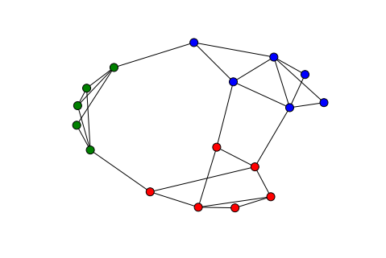

社区划分评价指标-Modularity
作用
随着人们对网络的深入研究，在现实中的很多场景中，网络会具有一定的社区结构，比如社交网络、计算机网络。根据网络的结构，网络可以划分为不同的社区，社区内的节点连接紧密，社区之间的节点连接稀疏。比如下图的网络结构。

很多研究人员提出了各种社区划分算法，比如基于特征值的谱划分法、基于介数或中心度的凝聚或分裂类算法。对于相同的数据，不同的算法可能会得到不同的结果。那么如何评价某一算法的划分结果的好坏呢？模块度（Modularity）就是用来评价一个划分结果的量。
定义
模块度是指落在社区内链路的比例减去链路是随机分布的情形下落在社区内比例。
感觉很拗口，下面详细说明。
首先定义几个符号：
- 图$G(V,E)$包含n个顶点、m条链路，即$|V|=n,|E|=m$
- 用$\delta_{vw}$表示节点v、w是否在同一社区中：等于1，表示v、w在同一社区中；等于0，表示v、w在不同社区中。
- 矩阵$A$表示图G的邻接矩阵，$A_{vw}=0$表示节点v、w之间没有链路，$A_{vw}=1$表示v、w之间存在链路。
- $k_v$表示节点v的度
- 计算社区内链路数目
可以很容易地写出，社区内链路数目为：
- 链路随机分布的情况
保持原来节点的度不变的情况下（每个节点连接的链路总数不变），但所有链路随机连接到其他节点。
再详细一点：
- 将原图$G$中的每条链路从中间断开，形成两个stub（那么节点v拥有$k_v$个stub，$k_v$为节点v的度）。
- 现在整个图有$2m$个stub。
- 让stub之间随机连接（单个节点上可能出现环），每个stub只能连接一条链路
- 这样生成新的图$G’$，其中每个节点的度与原图是一样的。
那么链路随机分布的情况下，节点v、w之间的链路期望数目为：$\frac{k_v k_w}{2m}$
随机情况下，社区内链路期望数目为：
$$1/2\sum_{vw}\frac{k_v k_w}{2m}$$
将两种情况的社区内链路数目相减，并除以总链路数就得到了Modularity：
$$Q=\frac{1}{2m}\sum_{vw}(A_{vw}-\frac{k_v k_w}{2m})\delta_{vw}$$另一种定义
假设整个图G可以被划为c个社区，定义$e_{ij}$表示链路连接社区i和社区j的概率，那么在社区内的链路概率为：
$$\sum_{vw}{\frac{A_{vw}\delta_{vw}}{2m}}=\sum_i^c{e_{ii}}$$定义$a_i=\sum_j{e_{ij}}$表示链路的任一节点落在社区i的概率。那么在随机情况下，社区i和社区j之间存在的链路概率为$a_i a_j$。${a_i}^2$表示在随机情形下，链路落在社区i中的概率。
这样模块度可以表示为：
$$Q=\sum_i^c(e_{ii}-a_{ii}^2)$$